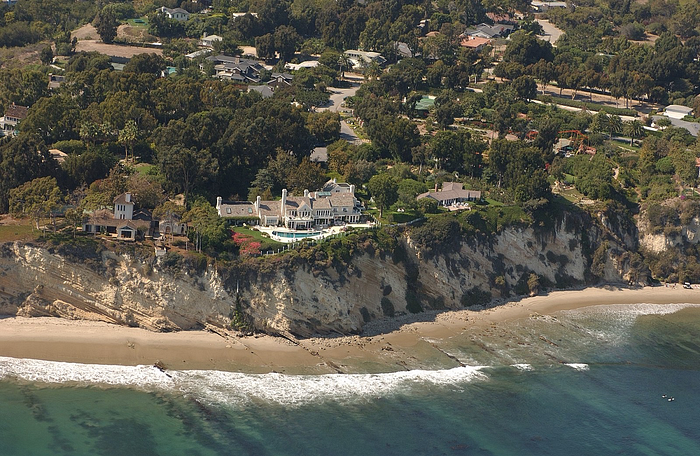

Die Nerd Enzyklopädie 9 - Der Streisand-Effekt
Der Streisand-Effekt
Der Streisand-Effekt ist für die meisten sicherlich ein alter Hut, gehört aber auch in dieses illustre Kompendium der digitalen Phänomene. Der Streisand-Effekt kann seine Dynamik vor allem auf Grund der schier endlosen Verbreitungsmöglichkeiten des Internets entfalten. Aber wie kam es dazu und welche Rolle spielen Pissoirs?
Am Anfang war die Erosion…
In 2003 fertige Kenneth Adelmann für pictopia.com zahlreiche Luftaufnahmen der kalifornischen Küste an, um die dort vorherrschende Erosion zu dokumentieren. Auf einer der 12.000 (!) Aufnahmen war auch das Anwesen von Barbara Streisand zu sehen. Die war davon aber kaum angetan, wohl in Sorge um Ihre Privatsphäre (Google StreetView, Streisands Endgegner, startete übrigens erst 4 Jahre später). Also verklagte sie Adelmann prompt auf Schadensersatz in Höhe von 50 Mio. USD.

Das Grundstück von Barbara Streisand um 2003 an der Küste Kaliforniens (WIKI12)
{kind=link}
Natürlich wusste die Öffentlichkeit bisher nicht, wo sich das Anwesen von Streisand befand. Und vermutlich hätte sie es auch nicht erfahren, denn das Thema Küstenerosion — ein wichtiges Forschungsthema — dürfte für einen Smalltalk am Stammtisch nicht gerade geeignet sein. Bis dahin wurde die Aufnahme 6 mal aufgerufen [TECHD1].
Mit der Klage änderte sich das. Das öffentliche Interesse war geweckt. Leider nicht zugunsten des Küstenschutzes, sondern für diese eine Luftaufnahme, die sich schlagartig im Internet verbreitete und im ersten Monat 420.00 Aufrufe generierte. Die Position von Streisands Küstendomizil war nun gar nicht mehr so unbekannt. Barbara Streisand hatte mir ihrer Klage genau das Gegenteil erreicht und sich damit auch einen Platz in der Popkultur gesichert — abseits von ihrer musikalischen Leistung: Der Streisand-Effekt beschreibt den hilflosen und ungeschickten Versuch eine unbeliebte und noch nicht sehr weit verbreitet Information zu unterdrücken, was ihre Bekanntheit in der Öffentlichkeit erst erhöht. Doch das war nicht die Geburtsstunde des Begriffs!
Erst in 2005 wurde der „Streisand-Effekt“ erstmals erwähnt: Auf der Seite urinal.net gibt es Aufnahmen von Toiletten. Unter anderem aus dem Marco Beach Ocean Resort. Und das Ressort hat den Betreiber der Seite in 2005 abgemahnt. In der Folge erlangte die Aufnahme dieses Pissoirs eine gewisse Aufmerksamkeit im Internet. Mike Manik, Autor des Online-Magazins Techdirt, berichtete über diesen ungewollten Popularitäts-Zuwachs und nannte das den „Streisand-Effekt“ [TECHD1].